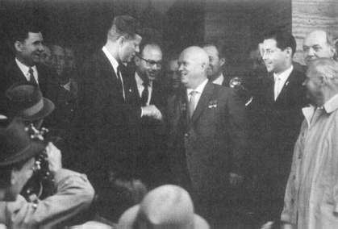

John F. Kennedy ve Kruşçev Viyana’da, Haziran 1961
Potsdam Konferansı’nda, üç galip devlet Berlin’in dört işgal kuvveti –Birleşik Devletler, Büyük Britanya, Fransa ve Sovyetler Birliği– tarafından yönetilmesine karar vermişlerdi. Almanya’yı da bu dört devlet idare edecekti. Öyle oldu ki, Almanya’nın dörtlü yönetimi bir yıldan biraz fazla sürebildi. 1949’da Batı bölgeleri, Federal Cumhuriyet şeklinde birleşti ve Rus bölgesi de Demokratik Alman Cumhuriyeti oldu.
Berlin için yapılan dört-devlet düzenlemesine göre, bu şehir Almanya’nın bir parçası değildi. Doğu ve Batı Berlin resmen II. Dünya Savaşı’nın dört galip müttefikinin yönetiminde idi. Sovyetler şehrin doğusunda geniş bir yeri işgal etmişti; Amerika’nın güneyde bir sektörü vardı, İngiliz ve Fransızların batı ve kuzeyde birer sektörleri vardı. Tüm Berlin ise, Demokratik Alman Cumhuriyeti’nin içinde bir ada gibiydi. Yıllar ilerledikçe, Doğu Almanlar ve Sovyetler, Berlin’in komünist blokun kasvetli griliği ortasında refah örneği olarak dikkati çeken üç bati sektörünü birer diken gibi görmeye başladılar. Her şeyden önemlisi, Batı Berlin batıya göç etmek İsteyen Doğu Almanlar için bir kanal vazifesi görüyordu: Şehrin üç sektöründen birine giden metroya biniyorlar ve sonra göç için başvuruyorlardı.
Berlin’in dört-devlet statüsüne karşın, şehre giriş için belirli bir düzenlemenin hiç görüşülmemiş olması şaşılacak bir şeydi. Her ne kadar dört devlet Berlin’e ulaşmak için çeşitli yollar ve hava koridorları belirlemiş iseler de, geçit mekanizması üzerinde açık bir anlaşmaya varmış değillerdi. 1948’de, Stalin bu boşluktan yararlanarak, Berlin’e giriş yollarının onarılmakta olduğu gibi teknik bir gerekçe ile Berlin ablukasını kurmaya çalıştı. Batı’nın bir yıl süren havadan ikmalinden sonra, giriş tekrar serbest bırakıldı; fakat hukuki yetki eskisi gibi belirsiz olarak kaldı.
Ablukadan hemen sonra gelen yıllarda Berlin o kadar büyük bir endüstri merkezi oldu ki, ihtiyaçları hele de bir olağanüstü durumda havadan ikmal ile karşılanması imkânsız hale geldi. Her ne kadar Berlin, teknik olarak hâlâ dört devletin kontrolündeki bir şehir ve Sovyetler Birliği de bu şehre girişten sorumlu ülke ise de, fiilen Doğu Alman uydu devleti, başkenti olan Doğu Berlin’den bu yolları kontrolü altında tutuyordu. Bu nedenle Berlin’in durumu çok hassastı. Karayolu, demiryolu ve hava bağlantıları o kadar kolaylıkla kesilebilir durumdaydı ki, bütün şehrin özgürlüğünü tehdit etmeden kuvvet kullanarak buna karşı koymak çok zordu. Teorik olarak, bütün askeri trafik Sovyet kontrolü altındaki bir kontrol noktasından geçmek zorundaydı, fakat gerçekte durum farklı idi; bir Doğu Alman nöbetçi kapıları kontrol ediyordu ve Sovyet subaylar bir anlaşmazlık olduğunda müdahale etmek üzere yakındaki bir derme çatma kulübede oturuyorlardı.
Kuvvetlerin karşılıklı durumundaki devamlı değişikliği göstermek için uygun bir yer arayan Kruşçev’in, Berlin’in bu hassas durumunu kullanmaya karar vermesi hiç de garip değildir. Hatıratında şöyle diyor:
“Kabaca söylemek gerekirse, Avrupa’daki Amerikan ayağında ıstırap veren bir su toplaması vardı. Bu, Batı Berlin’di. Amerikalıların ayağına basıp acı vermek istediğimiz zaman yapmak zorunda olduğumuz tek şey, Alman Demokratik Cumhuriyeti toprakları boyunca Batı iletişimini engellemekti.”{774}
Kruşçev’in, Batı’nın Berlin’deki durumuna meydan okuması, genel sekreterin barış için en çok ümit bağladıktan kişi olduğuna demokrasilerin kendilerini inandırdıktan bir anda geldi. John Poster Dulles gibi şüpheci bir Sovyet gözlemcisi bile, 1956 Şubat’ında Kruşçev’in Yirminci Parti Kongresi’ndeki konuşmasına Sovyet politikasında “önemli bir değişiklik” olduğunu fark ettiği şeklinde cevap verdi. Dulles, Sovyet yöneticilerinin “komünist olmayan dünyaya yaklaşımlarını temelden değiştirme zamanının geldiğine” karar verdiklerini söyledi. “Artık dış politika hedeflerini daha az hoşgörüsüzlük göstererek ve daha az şiddet kullanarak gerçekleştirmeye çalışıyorlar.”{775} Aynı nedenle, Eylül 1957’de, Süveyş ve Macaristan krizinden bir yıldan daha az bir zaman sonra, Büyükelçi Llevvellyn Thompson, Moskova’dan gönderdiği raporda, Kruşçev’in “Batı ile ilişkilerde yumuşamaya mecbur kaldığını ve bunu gerçekten istediğini”{776} vurguluyordu.
Kruşçev’in hareketleri bu iyimserliği doğrulamıyordu. Ekim 1957’de, Sovyetler ilk yapay uyduları Sputnik’i fırlatarak dünya yörüngesine yerleştirdiği zaman, Kruşçev bu bir atımlık başarıyı, Sovyetler Birliği’nin, demokrasileri, hem bilim, hem de askeri alanda geçtiğinin bir kanıtı olarak yorumladı. Batı’da bile, planlı ekonominin pazar ekonomisinden nihai olarak daha üstün olabileceği görüşü inanılırlık kazanmaya başladı.
Başkan Eisenhower, paniğe kapılmayan neredeyse tek kişiydi. Bir asker olarak, bir prototip ile kullanılmaya hazır bir askeri silah arasındaki farkı anlıyordu. Diğer yandan kendi övünmesini ciddiye alan Kruşçev, Sovyet füzelerinin sözde üstünlüğünü diplomatik bir hamleye çevirmek için saldırıya geçti. Ocak 1958’de, bir Danimarkalı gazeteciye şöyle diyordu:
“Sovyet sputniklerinin atılması, her şeyden önce şunu gösteriyor ki... sosyalist ülkelerle kapitalist ülkeler arasındaki kuvvet dengesinde, sosyalist devletler lehine ciddi bir değişiklik olmuştur.”{777}
Kruşçev’in fantezisine göre, Sovyetler Birliği bilimsel ve askeri alanlarda Birleşik Devletler’i geçtiği gibi, yakında sınai üretimde de geçecekti. 4 Haziran 1958’de, Bulgar Komünist Partisi’nin Yedinci Kongresi’nde şunları söyledi:
“Kesin olarak şuna inanıyoruz ki, sosyalist ülkelerin en gelişmiş kapitalist ülkeleri dahi, yalnızca tempoda değil, endüstriyel üretim hacminde de geçmesi zamanı yaklaşmaktadır.”{778}
Davasına inanmış bir komünist olarak, Kruşçev’in kuvvet dengesindeki bu varsayılan değişikliği, pratik diplomatik gerçeğe dönüştürmeye çalışması gerekirdi. Berlin ilk hedefiydi. Kruşçev, üç girişimle meydan okumayı başlattı. 10 Kasım 1958’de, Berlin’in dörtlü statüsüne son vermek istediği ve Sovyetler Birliği’nin şehre giriş kontrolünü Doğu Alman uydusuna bırakmak niyetinde olduğu uyarısında bulundu. O günden sonra, Kruşçev şöyle yemin etti: “ABD, Britanya ve Fransa Berlin’e ait bir sorunla ilgileniyor iseler, Demokratik Alman Cumhuriyeti ile ilişkilerini kursunlar ve onunla anlaşsınlar.”{779} 27 Kasım’da, bu konuşmasının esasını, Birleşik Devletler’e, Büyük Britanya’ya ve Fransa’ya gönderdiği resmi notalara aktararak, Berlin üzerindeki Dört Devlet Anlaşması’nın hükümsüz ve geçersiz olduğunu ilan etti ve Batı Berlin’in askerden arındırılmış bir “serbest şehir”e dönüştürülmesinde ısrar etti. Altı ay içinde herhangi bir anlaşmaya varılmazsa, Sovyetler Birliği, Doğu Almanya ile bir barış anlaşması imzalayacak ve işgal haklarını ve şehre giriş yollarının kontrolünü Demokratik Alman Cumhuriyeti’ne bırakacaktı.{780} Kruşçev Batılı müttefiklere, ültimatom olmamakla beraber ona benzer bir şey vermişti.
10 Ocak 1959’da, Kruşçev diğer üç işgal devletine Berlin’in ve Doğu Almanya’nın yeni statüsünü tanımlayan bir barış anlaşması taslağı verdi. Ayın sonuna doğru, Yirmi Birinci Komünist Parti Kongresi’nin önünde politikasının mantığını açıkladı. Mallarını öven bir sahtekâr gibi Sovyet gücünün değerlendirilmesini biraz daha abartarak, Çin Halk Cumhuriyeti ile birlikte Sovyetler Birliği’nin, zaten dünyanın endüstriyel üretiminin yarısını ürettiklerini, bu nedenle de “uluslararası durumun kökten değişeceğini”{781} söyledi.
Kruşçev, saldırı noktasını büyük bir beceri ile seçmişti. Berlin’e giriş yollarının Doğu Almanya’nın kontrolüne bırakılması, dolaylı bir meydan okumaydı. Bu durum demokrasileri, Doğu Almanya’yı tanıma veya geçiş belgelerini kimin mühürleyeceği teknik sorunu için savaş tehdidinde bulunma seçeneği ile karşı karşıya getirdi. Ancak Kruşçev’in doğasına uygun olarak çıkardığı yaygara, aslında Sovyetlerin durumundaki gerçek bir zayıflığı maskeliyordu. Doğu Almanya hızla insan gücü kaybediyordu. Yüzbinlerce vatandaşı, çoğu meslek sahibi yetenekli kişiler, Berlin yoluyla Batı Almanya’ya kaçıyorlardı. Berlin, Demir Perde’de dev bir delik olmuştu. Bu eğilim devam ederse, kendisini “işçi cenneti” ilan eden bu ülkede işçi kalmayacaktı.
Doğu Alman devleti, Sovyet nüfuz küresindeki en nazik halkayı oluşturuyordu. Sınırında daha büyük, daha müreffeh bir Batı Almanya ile karşı karşıya olan ve yalnız Sovyet uydu devletleri tarafından tanınmış olan Doğu Almanya, hukuka uygunluktan yoksundu. Berlin kanalıyla insan gücü kaçışı, devletin devamını tehdit ediyordu. Doğu Berlin liderleri, bir şey yapılmazsa birkaç yıl içinde bütün devletin çökebileceğini düşünüyorlardı. Böyle bir şey, Kruşçev’in kuvvetlendirmeye çalıştığı Sovyet nüfuz küresine indirilmiş mahvedici bir darbe olacaktı. Kaçış yolunu kesmekle, Kruşçev Doğu Alman uydusuna yeni bir hayat vermiş olacaktı. Ayrıca Batılıları geri çekilmeğe zorlamakla, Federal Cumhuriyet’in Batı ile bağlarını da zayıflatmayı amaçlanmıştı.
Kruşçev’in ültimatomu, Adenauer’in politikasını can damarından vurdu. Hemen hemen on yıldan beri, Adenauer Batı ile bağlarını feda etme karşılığında Almanya’nın birleşmesi ile ilgili bütün önerilere karşı çıkmıştı. Sovyetler Birliği, Stalin’in 1952 barış planı ile tarafsızlık madalyonunu Alman halkının gözleri önünde sallayıp durmuştu ve Adenauer’in muhalifleri bu planı desteklemişti. Adenauer, ülkesinin geleceğini Amerikan ve Alman çıkarlarının birbirinin aynı olduğu düşüncesine bağlanmıştı. Üstü kapalı pazarlık şöyleydi: Federal Cumhuriyet, Atlantik savunma sistemine katılacak ve müttefikler Alman birliğini, Doğu-Batı diplomasisinin bir unsuru yapacaklardı. Bu nedenle, Adenauer için Berlin krizi, Berlin’e giriş prosedürü probleminden çok daha fazla bir şeydi. Bu kriz, Federal Cumhuriyet’in Batı taraftarlığının doğru bir seçim olup olmadığının bir sınava tâbi tutulması idi.
Adenauer’ın şu gerçeği görmezlikten gelmesi mümkün değildi: Doğu Almanya’nın statüsündeki her gelişme, birliğin iki Alman devleti arasındaki görüşmelere bırakılması gerektiği yolundaki Sovyet iddiasını kuvvetlendiriyordu. Sosyal Demokrat Parti’nin hâlâ tarafsızlık yanlısı olduğu bir zamanda, müttefiklerin Alman Demokratik Cumhuriyeti’ni de facto olarak tanıması, Alman iç politikasında devrim yaratacak bir şeydi. De Gaulle’e göre Adenauer 1959 Aralık ayında yapılan bir Batı zirve toplantısında şöyle demişti:
“Eğer Berlin kaybedilirse, benim politik durumum bir anda savunulamaz bir duruma düşer. Bonn’da sosyalistler iktidara gelirler. Moskova ile doğrudan doğruya bir düzenleme yapmak için harekete geçerler ve bu da Avrupa’nın sonu olur.”{782}
Adenauer’in görüşüne göre, Kruşçev’in ültimatomu her şeyden önce Federal Cumhuriyet’i izole etmeye yönelikti. Görüşmeler için Sovyetler tarafından hazırlanan gündem, Bonn’u kazanması imkânsız bir duruma sokmuştu. Vereceği ödünlere karşılık, Batı’nın eline geçecek şey, en iyi tahminle esasen şimdi sahip olduğu şeydi: Berlin’e giriş. Aynı zamanda, Doğu Alman uydu devletine Almanya’nın birleştirilmesi konusunda bir veto hakkı verilecekti ki, bu veto ya bir hareketsizliğe götürecek veya Adenauer’ın hatıratında tanımladığı aşağıdaki sonucu doğuracaktı:
“...Almanya’nın birleştirilmesini, Almanya’yı Batı blokundan ayırma ve Avrupa bütünleşmesinin başarılarından vazgeçme pahasına satın alamayız. Çünkü sonuç, Avrupa‘nın ortasında kendini savunamayan, bağlardan yoksun bir Almanya olacaktır ve bu devlet, zorunlu olarak Doğu‘yu Batı ‘ya karşı kullanma girişiminde bulunacaktır.”{783}
Kısacası, Adenauer, Kruşçev tarafından ana hatları çizilen şartlar altında yapılacak görüşmelerden hiçbir fayda çıkacağını sanmıyordu. Bununla beraber, eğer görüşmelerden kaçınmak mümkün olmazsa, bu fırsatı, Batı’ya güvenmenin daha akıllıca bir şey olduğunu kanıtlamak için değerlendirmeyi istedi. Kruşçev’in ültimatomuna ödün vererek cevap vermeyi şiddetle reddetti; Batı’nın birlik planlarını, hür seçimler üstüne oturtmasını yeğliyordu.
Ancak Adenauer’in görüşleri, İngiliz-Amerikan müttefikleri, en azından Büyük Britanya tarafından paylaşılmıyordu. Başbakan Harold Macmillan ve İngiliz halkı, ülkelerinin Büyük Devlet sıfatını kaybetmesinden büyük ölçüde sorumlu tuttukları yenilmiş düşmanlarının başşehri uğruna savaşı göze almakla isteksizdiler. Büyük Britanya, Fransa’ya benzemeyen bir şekilde, uzun vadeli güvenliğini Almanya’nın geleceği ile bir tutmuyordu. Bir kuşak içinde iki kez, Avrupa’nın çoğunu ele geçiren Alman saldırısından Amerika’nın müdahalesi ile son anda kurtulmuştu. Her ne kadar Büyük Britanya Atlantik ittifakı içinde korunmayı yeğlerse de, bir seçim yapmak zorunda kaldığında, Amerika’dan ayrılmaktansa, Avrupa’dan izole edilme riskini göze alabilirdi. Eisenhower’ın iç sorunları, İngiliz liderlerini, Adenauer’in iç sorunlarından daha çok ilgilendiriyordu. Nihai bir krizde, Eisenhower’ın iç destek sağlama yeteneği, Büyük Britanya’nın hayatta kalması üzerinde çok daha fazla etkili olacaktı. Bütün bu nedenlerle, İngiliz liderler Alman birliği üzerine pek fazla oynamadılar ve Adenauer’in kuşkularını, hukuki bilgiçlik taslamanın gerisinde saklanan milliyetçilik olarak yorumladılar.
Kalben pragmatist olan İngiliz liderler, bir transit geçiş damgasının vurulmasında yetkinin, Sovyet memurlarından Doğu Almanlara transferi yüzünden nükleer savaş tehlikesini göze almayı tuhaf buluyorlardı. Bir nükleer savaşın dehşet verici sonuçlarının ışığı altında, 1940’ta Fransa’nın demoralize olmasına katkıda bulunan “Pourquoi mourir pour Danzig?” (Danzig için neden ölelim?) sloganı, daha da haksız olan “Bir transit geçiş damgası için neden ölelim?” sloganı karşısında donuk kalırdı.
Macmillan böylece, Berlin’e giriş prosedürünü “iyileştirebilecek” en az zaman kaybettirecek her hangi bir görüşmenin en ateşli savunucusu oldu: “Eğer tüm devlet başkanları, diğerlerinin topraklarında dolaşıyorsa, insan ani ve ölümcül bir patlama olacağına inanamaz” dedi.{784}
Bütün müttefik liderleri içinde, Eisenhower en ağır sorumluluğu taşıyanıydı; çünkü nükleer savaş riskini göze almak nihai olarak onun omuzlarında idi. Birleşik Devletler için Berlin krizi şu gerçeği oraya çıkardı ki, nükleer silahlar Amerika’nın nükleer tekeli veya yan tekelinin devam ettiği on yıl boyunca çabuk ve nispeten pahalı olmayan bir güvenlik sağlamıştır; ancak bu silahlar, yaklaşan nükleer eşitlik çağında Amerika’nın tehlikeyi göze almaktaki istekliliğini artan bir şekilde sınırlamakta ve diplomatik manevra özgürlüğünü kısıtlamaktadır.
Amerika saldırıdan bağışık olduğu sürece, nükleer silahlar bu ülkeye, şimdiye kadar hiçbir ülkeye nasip olmayan bir avantaj sağlamıştı. Çoğunlukla olduğu gibi, bu avantajın en ayrıntılı biçimde ortaya konuşu, tam da bu avantaj kaybolmak üzereyken yapıldı. Amerika’nın nükleer tekeli veya yan tekeli döneminin sonuna doğru, Dulles gelecekte Sovyet saldırısını caydırmak ve Kore’de olduğu gibi uzun hareketsizliklerden kaçınmak için “toptan karşılık” kavramını geliştirdi. Saldırıya gerçekleştiği yerde direnme yerine, Birleşik Devletler sorunun çıktığı kaynağa karşı kendi seçeceği zamanda ve seçeceği silahla karşılık verecekti. Ancak toptan karşılık politikası daha yeni ilan edildiği sırada, Sovyetler Birliği kendi termonükleer silahlarını ve kıtalar arası stratejik füzelerini geliştirmeye başlamıştı. Bu stratejinin inanılırlığı, bu nedenle oldukça hızlı bir şekilde kayboldu. Genel bir nükleer savaş, Berlin krizi dâhil, birçok önceden öngörülebilir kriz için orantısız bir çözüm oluşturuyordu. Demokrasi liderleri, Kruşçev’in Sovyet füzelerinin gücü hakkında inanılmaz bir şekilde abartılmış iddialarını da çok ciddiye aldılar (Eisenhower hariç). Fakat 1958’de tartışmaya bile gerek yoktu ki, genel bir nükleer savaş, birkaç gün içinde her iki dünya savaşındakinden çok daha fazla kayba sebebiyet verecekti.
Bu basit denklem, nükleer savaş tehdidini inanılır yapmak için gerekli türden bir diplomasi ile tehlikenin doğasını karşılayacak demokratik kamuoyunun oluşması için gereksinim duyulanlar arasında bir çatışma yarattı. Ölüm-kalım sorunu karşısında inanılırlık, hiçbir saldırganın sınamaya hiçbir zaman cesaret edemeyeceği normal hesapların ilerisinde bir pervasızlık ve meydan okumalara karşı çok hassas bir reaksiyon gösterilmesi anlamına gelir. Demokratik halkın istediği ve elde etmeye hakkı olan politika ise, sakin, mantıklı, hesaplı ve esnek bir diplomasiydi. Ancak böyle bir diplomasi de Amerika’nın genel bir nükleer savaşa başvurma kararlılığının düşman tarafından sorgulanmasına sebep olurdu.
Berlin krizinin başında, Eisenhower Sovyet liderlerini şoke etmenin değil, Amerikan halkını sakinleştirmenin daha önemli olduğuna karar verdi. 18 Şubat ve 11 Mart 1959 tarihlerinde yaptığı basın toplantılarında, Amerikan stratejisinin içinde mevcut olan nükleer tehdide gerek göstermeyecek bazı öneriler ileri sürdü. “Kuşkusuz Avrupa’da bir kara savaşı yapacak değiliz”{785} dedi ve özellikle Berlin’in savunulmasını bu kategori içine soktu. Birleşik Devletler “vuruşarak Berlin yolunu”{786} açmayacağını ilân etti. Bir boşluk bırakmamak için, Berlin’in nükleer silahla savunulmasını da hariç tuttu: “ Bir şeyi nükleer silahlarla nasıl kurtarabileceğimizi kesinlikle anlamıyorum.”{787} Bu açıklamalar, Amerika’nın Berlin yüzünden nükleer bir savaş tehlikesini göze almak isteğinin çok sınırlı olduğu izlenimi bıraktı.
Eisenhower’ın tepkisindeki yumuşaklığın bir nedeni, kendisinin ve birçok Amerikan liderinin, Kruşçev’i, barış için en iyi ümit olarak kabul etmeleriydi. Kruşçev’in Berlin ültimatomu, Büyükelçi Thompson’un iki yıl önceki görüşlerini değiştirmedi. 9 Mart 1959’da Thompson, Kruşçev’in asıl uğraşının iç sorunlar olduğunu tekrarladı. Büyükelçiye göre, belirli bir amaca ulaşmak için büyük bir tehlikeyi göze almak, Kruşçev’in ekonomik reform ve iç liberalleşme için ön şart olan barış içinde bir arada yaşama modeli geliştirme yöntemiydi.{788} Bir savaş tehdidinin, nasıl olup da bir arada yaşama örneği oluşturduğu ise, açıklanmadı.
Böyle analizler, uluslararası dörtlü grubun diğer üyeleri üzerinde bir etki yaratmadı: Fransız Cumhurbaşkanı Charles de Gaulle, on iki yıllık bir politik boşluktan sonra iktidara dönmüştü. Kruşçev’i yönlendiren sebepler üzerindeki İngiliz-Amerikan analizlerine katılmıyordu ve Berlin krizinin Adenauer’e, Fransa’nın Federal Cumhuriyet’in ayrılmaz ortağı olduğunu göstermesini istiyordu. Kruşçev’in tehditlerinden çok, Alman milliyetçiliğinin yeniden uyanmasından korkuyordu. En azından Adenauer’e Batı’da bağlanacağı bir yer sağlamak istiyordu; mümkün olsa, düş kırıklığına uğramış Adenauer’den, Amerika’nın daha az sözünün geçtiği bir Avrupa yapısı oluşturulmasında yardımını isteyecekti.
Eisenhower ve Macmillan, kabulü önemsiz veya uzun vadede hiçbir zarar vermeyecek bazı Sovyetler taleplerini bulup onları tatmin etmeye çaba harcarken, de Gauelle böyle bir stratejiye sert bir şekilde karşı çıktı. İngiliz-Amerikan ortaklarının “ağız arama konuşmaları” yapılması önerilerini reddediyordu; çünkü bu konuşmaların Batı’ya bir yarar sağlamayacağı kanısındaydı. Washington ve Londra’da titizlikle hazırlanan ve Berlin’e girişte “iyileşme” sağlayabilecek prosedür değişiklikleri öngören planları küçümsüyordu. Her şeyden önce, Kruşçev Berlin’e girişi iyileştirmek için bir ültimatom vermemişti. De Gaulle’ün düşüncesine göre, meydan okumanın nedeni, Sovyetlerin içyapısıydı, herhangi bir belirli Sovyet yakınmasından ileri gelmiyordu. Eisenhower, Sovyetler Birliği’nin askeri bakımdan ikinci derecede olduğunu anlıyordu; de Gaulle bir adım daha ileri giderek, Kruşçev’in ültimatomunu doğal olarak kusurlu, zayıf ve büyük ölçüde kötü bir politik sisteme bağlıyordu:
“... Sovyetler tarafından organize edilen bu meydan okumalar ve anlamsız isteklerdeki artışta o kadar keyfi ve yapay bir şey var ki, insan doğal olarak bunun nedeninin, çılgın ihtirasların bilerek, isteyerek tahrik ve teşvik edilmesi veya dikkatleri bazı büyük problemlerden başka tarafa çekmek arzusu olduğunu düşünüyor, ikinci hipotez bana daha akla yakın geliyor. Çünkü komünist sistemin kendi boyunduruğu altındaki ülkelere uyguladığı baskı, izole etme ve kuvvet kullanma metotlarına karşın... sistemdeki boşluklar, eksiklikler, iç başarısızlıklar ve hepsinden çok gayri insani baskılar, gittikçe artan şekilde elit zümreler ve kalabalık topluluklar tarafından hissediliyor ve bunları kandırmak ve onlara boyun eğdirmek gittikçe güçleşiyor.”{789}
O halde, Sovyet askeri gücü, Sovyet sisteminin doğasında mevcut olan bitmez tükenmez iç mücadeleleri gözlerden uzak tutmak için bir paravandı:
“...onların kamplarında, politik eğilimler arasındaki kavgalar, klanların entrikaları, kişiler arasındaki çekişme periyodik olarak büyük krizlere neden oluyor ve bunların sonuçlan, hatta uyarıcı belirtileri bile onları huzursuz etmeye yetiyor...”{790}
Sovyet baskısına boyun eğmek, Kruşçev’in dikkatleri sisteminin temel iç bunalımlarından çekerek dış maceralar peşinde bir adım daha ileri gitmesine cesaret verecekti ve Almanya’nın “Batı güvencesinden ümidini keserek Doğu’da bir gelecek aramasına”{791} yol açabilecekti.
De Gaulle, böyle açık görüşlü bir ayak direme gösterebilirdi; çünkü onun, Amerikan Başkanı gibi bir nükleer savaşı başlatmak sorumluluğu yoktu. Karar vermek zamanı geldiğinde, de Gauelle’ün de nükleer savaş tehlikesini üzerine almaya Eisenhower’dan daha çok hazır olacağı çok kuşkuludur; ülkesinin nazik durumu düşünüldüğünde, bunu belki de daha az isteyecekti. Ancak, tam da başlıca savaş tehlikesinin Batı’nın kararsızlığından ileri geldiğine ve Amerika’nın Sovyetleri caydıracak tek devlet olduğuna inanmış olduğu için, de Gaulle Amerika’yı, sağlam durmak veya verilecek ne ödün varsa onları vermek sorumluluğunu üstlenmek zorunda bırakacak şekilde istediği gibi manevra yapmakta kendisini serbest hissediyordu. Bu, güzel bir oyun değildi; fakat raison d’état çetin dersler öğretir. Raison d’état esası üzerinde, 300 yıldan beri Fransa’nın Orta Avrupa politikasının esasını oluşturmakta olan Almanya’nın zayıf ve parçalanmış olarak kalması şeklindeki Richelieu geleneğini de Gaulle tersine çevirdi.
De Gaulle’ün, Fransız-Alman dostluğuna bu kadar çok istemesi, birdenbire gelen aşırı bir duygusallık sonucu değildi. Richelieu zamanından beri, Fransız politikası meşum Alman komşusunu zayıf veya bölünmüş (tercihan ikisi bir arada) olarak tutmak amacına yönelmiştir. XIX. yüzyılda, Fransa, Almanya’yı tek başına zapt edecek kadar güçlü olmadığını anladı. Büyük Britanya, Rusya ve birçok küçük devletle yapılan ittifaklar bunun sonucuydu, İkinci Dünya Savaşı sonrasında bu seçenekler de kayboldu. Büyük Britanya ve Fransa bir arada, iki dünya savaşında Almanya’yı yenecek kadar kuvvetli değillerdi. Sovyet orduları Elbe’de ve Doğu Almanya bir Sovyet uydusu iken, Moskova’yla bir ittifakın, Almanya’yı çevrelemek yerine, Avrupa’yı Sovyet hegemonyası altına sokması çok daha olası idi. Bu nedenle, de Gaulle geleneksel Alman düşmanlığını terk etti ve Fransa’nın geleceğini, kalıtsal düşmanı ile dostlukta gördü.
Berlin krizi, de Gaulle’e stratejisini uygulamak fırsatı sağladı. Fransa’yı dikkatli bir şekilde Avrupa kimliğinin koruyucusu rolüne soktu ve Berlin krizini, Fransa’nın Avrupa gerçeklerini anladığını ve Alman milli çıkarlarına karşı duyarlığını göstermek için kullandı. De Gaulle’unki karmaşık bir yaklaşım olup, Alman milli hedeflerine destek vermek ile Almanlara kendi olanaklarıyla veya Sovyetlerle bunları elde etme cesareti vermemek arasında çok kurnazca bir denge hareketi gerektiriyordu. De Gaulle, Moskova’nın Doğu Almanya’daki hâkimiyetinin, Sovyet liderlerini Alman birliğinin şampiyonları olarak ortaya çıkarmasından veya Fransız sınırında hiçbir yere bağlı olmayan bir Almanya’nın yaratılmasından korkmaya başlamıştı. Fransa’nın yüzyıllık Alman kâbusu, olası bir Alman-Sovyet anlaşması kâbusuna dönüşmüştü.
De Gaulle’ün tepkisi, karakterine uygun şekilde cesurcaydı. Fransa, Alman askeri ve ekonomik gücünü kabul edecek, hatta bu alanlardaki üstünlüğünü de teslim edecek ve Bonn’un Fransa’yı Avrupa’nın politik lideri olarak tanıması karşılığında Alman birliğini destekleyecekti. Bu, soğukkanlılıkta yapılan ince bir hesaptı, büyük bir ihtiras değildi; de Gaulle kuşkusuz başarısız olarak ölmedi; çünkü onun hayatı boyunca Almanya yeniden birleşmedi.
De Gaulle’ün aşırı uzlaşmazlığı ile Macmillan’ın görüşmeler yapılmasını isteyen talebi arasında bir denge yakalamaya çalışan Dulles, bilinen taktiğini kullanarak sorunu hukuki detaya boğdu. Kendi düşüncesine göre, bu taktik, Süveyş krizi esnasında çok işe yaramıştı. 24 Kasım 1958’de, Kruşçev’in tehditkâr konuşmasından iki hafta sonra, Dulles esas hakkında teslim olmadan, Berlin’e giriş prosedüründe değişiklik yapma olanaklarını aramaya başladı. Adenauer’e, “Sovyetler Birliği’ni taahhütlerine sadık olmaya çağırırken”, aynı zamanda “de facto olarak, mevcut düzenlemeye göre işlerini otomatik olarak yaptıkları sürece küçük Doğu Alman memurlarla”{792} da ilgileneceğini söyledi. 26 Kasım’daki basın toplantısında Dulles, Doğu Alman memurlarının Sovyetler Birliği’nin “temsilcileri” olarak hareket edebilecekleri formülünü ortaya attı. Bu, Süveyş krizi esnasındaki Kanalı Kullananlar Birliği’ni hatırlatan bir hileydi. (Bkz. Bölüm 21){793}
13 Ocak 1959’daki bir basın toplantısında, Dulles bir adım daha ileri giderek, Amerika’nın, Almanya’nın birleştirilmesi konusundaki tarihi tutumunda bir değişiklik işareti verdi. Almanya’yı birleştirmek için serbest seçimlerin “doğal metot” olduğuna işaret ederek, “bunun, birleşmenin yapılması için tek metot olduğunu söylemek istemiyorum”{794} diye ekledi. Üstü kapalı bir şekilde, iki Alman devletinin bir çeşit konfederasyon şeklinde birleşmesinin kabul edilebileceğini bile ima etti: “Ülkeleri ve halkları bir araya getiren bir sürü metot vardır...”{795} Birleşme sorumluluğunun müttefiklerden alınıp Alman halkının kendisine verilmesini kuvvetle ima etti ve bu görüş Adenauer’ın politikasının esasını temelden yıkmak demekti.
Alman tepkisi tahmin edilebilirdi; fakat kimse böyle bir şey yapmadı. O zamanki Berlin Belediye Başkanı Willy Brandt “şok olduğunu ve dehşete düştüğünü” ifade etti. Brandt, Dulles’m temsilci teorisinin, Sovyetlerin daha az “uzlaşmacı” bir tutum takınmasına neden olacağını söyledi.{796}
Sertlik Adenauer’ın normal tarzı değildi. Dulles’a karşı da büyük bir hayranlık duyuyordu. Bununla beraber, Eden’in Süveyş esnasında yaptığı gibi Dulles’m ilhamlarına tepki gösterdi. Büyükelçi David Bruce’la yaptığı bir konuşmada Adenauer, Dulles’m açıklamalarının, hükümetinin politikasının altını oyduğunu duygusal bir şekilde söyledi. Bu politika, Batı kanalıyla ve serbest seçimlerle birleşmeyi öngörüyordu. Adenauer, “...ne şekilde olursa olsun, konfederasyon kesin olarak kabul edilemez”{797} diye ısrar etti.
1959 Ocak ayı ortalarında olaylara bakış açısındaki farklılık sancılı bir şekilde su yüzüne çıktı. Adenauer, Dışişleri Bakanlığı Politik işler Müsteşarı Herbert Dittmann’ı, bir Alman barış antlaşması ile ilgili Sovyet önerisine karşı duydukları “şoku” aktarmak ve Batı’nın yerleşmiş politikasına dayalı görüşme olanaklarını zorlamak için Washington’a gönderdi. Dittmann’ın meslektaşı, Dışişleri Bakanlığı Müsteşarı Livingston Merchant, bu krizde Adenauer’in, Dulles’ın geleneksel tam desteğine bel bağlamamasını açıkça söyledi. Dulles’ın herhangi bir “aşırı durum”dan kaçınmak ve “Rusları konferans masasına oturtmak” istediğini söyledi. Almanların yapabilecekleri en iyi katkı, “bizim için yeni fikirler üretmek”{798} olurdu. Kriz gelişirken, Amerika ve Büyük Britanya ne zaman “yeni fikirler” istediyse, Doğu Alman rejiminin statüsünü sağlamlaştıracak veya bazı Sovyet taleplerini karşılayacak formüller yaratmak için üstü kapalı deyimler buluyorlardı.
İşin hayret edilecek tarafı, Büyük Britanya ve Birleşik Devletler’in, Almanya’yı daha yaygın bir Alman milliyetçiliğine götüreceği kesin olan bu yöne itmeleri idi. Vatandaşlara güveni azalmış olan Adenauer, onların bu hevese kapılmamaları için kararlı hareket ediyordu. Eisenhower ve Macmillan, Almanlardaki değişime güveniyorlardı; Adenauer ise, onların ilk günahlarını unutmamıştı.
Macmillan, safları ilk kıran kişi oldu. 21 Şubat 1959’da, kendi başına “ağız arama konuşmaları” için Moskova’ya gitti. Adenauer bütün girişimi onaylamadığından ve bu konuda müttefikler arasında bir fikir birliği de mevcut olmadığından, Macmillan’ın ne gibi ödünler verilebileceğini “araştırmak” için yaptığı bu girişim, bilinen Berlin’e giriş prosedüründe “iyileştirme” konusunu ve barışın dünya liderleri arasındaki kişisel ilişkilere dayandığı görüşünü de içermiş olmalıdır.
Kruşçev, Macmillan’ın ziyaretini, kuvvet dengesinde kendi lehine bir gelişmenin ve ileride daha iyi gelişmeler olacağının doğrulanması olarak yorumladı. Macmillan’ın ziyareti sırasında, Kruşçev, taleplerini ödün vermeyen bir tonda tekrarladığı sert bir konuşma yaptı. Başbakanın hareketinden sonra yaptığı başka bir konuşmada, Macmillan’ın dünya liderleri arasındaki kişisel iyi ilişkilerin, barışa giden yolu kolaylaştıracağı yolundaki görüşünü reddederek şöyle dedi: “Tarih bize şunu öğretiyor ki, devletlerin sınırlarını değiştiren şey, konferanslar değildir. Konferansların kararları, yalnızca kuvvetlerin yeni dizilişini aksettirir. Bu da, bir savaş, ya da başka olaylar sonundaki zaferin veya teslimiyetin bir sonucudur.”{799} Bu sözler, Realpolitik’in küstah bir ifadesi olup, Richelieu veya Bismarck’ın ağzından da dökülüyor olabilirdi.
Adenauer’in patlamasından sonra Dulles geri çekildi. 20 Ocak’ta “temsilci teorisini” geri çekti ve Alman birliğine giden yol olarak konfederasyon imasına son verdi. Ancak Dulles’ın geri çekilmesi daha çok bir taktikti. Kanaatler değişmediği gibi, kişilikler de değişmemişti, iki yıl önceki Süveyş krizinde olduğu gibi, Amerikan politikası, Eisenhower ile Dulles’ın görüşleri arasındaki ince nüansları uzlaştırmaya dayanıyordu. Sovyet sistemini analiz etmiş olan Dulles, büyük bir olasılıkla Adenauer’in görüşünü anlıyor ve hatta bu görüşlerin çoğunu paylaşıyor olabilirdi. Fakat, önceden olduğu gibi, Dulles stratejisini, daha temel olan Eisenhower’ın yaklaşımına nasıl aktaracağını hesaplamak zorundaydı.
Çünkü her şeyden önemlisi, Adenauer’i endişelendiren sorunların çoğu Eisenhower’a, önemsiz değilse bile teorik geliyordu. Kruşçev’in, Eisenhower’ın kişisel düşüncelerinden haberdar olmaması gerçekten bir şanstır. 27 Aralık 1958’de, Kruşçev’in resmi ültimatomunu verdiği tarihte, Eisenhower Dulles’la yaptığı bir telefon konuşmasında, Berlin ve Berlin’e giden yolların, Birleşmiş Milletler’in hukuki yetkisi içinde olmak kaydıyla, Amerikan birliklerinin mevcut olmadığı bir tür serbest şehir olması fikrine yatkın olduğunu söyledi.
Başkanın danışmaları veya kabine üyeleri, bir konuda başkanları ile aynı fikirde olmadıkları zaman, anlaşmazlık henüz teorikken düşüncelerini açıkça ortaya koymak veya fiili karar anına kadar beklemek arasında bir seçim yapmak zorundadırlar. Cevap gelecekteki etkiyi de belirler; çünkü başkanlar genellikle kuvvetli irade sahibi kimselerdir. Danışmanlar kuramsal sorunlarda karşı çıkarlarsa, başkan, kendiliğinden fikrini değiştirebileceğinden, gereksiz bir tatsızlık çıkarmış olurlar. Diğer taraftan, olayların gelişmesini beklerlerse ayak altında ezilmek tehlikesi ile karşı karşıya kalabilirler. Dulles orta yolu seçti. Eisenhower’ı “kâğıttan anlaşmalar”a karşı uyarırken, Berlin’i hür olarak korumak için Amerikan birliklerine gereksinim olduğuna dikkat çekti.{800} Olaylar öyle gelişti ki, fiilen karar verme fırsatı hiçbir zaman doğmadı. Bu sırada Dulles ölümcül derecede hasta idi ve altı ay sonra, 24 Mayıs 1959’da öldü.
1 Temmuz’da, Eisenhower kendi uzlaşma temasına döndü. Sovyet Başbakan Yardımcısı Frol Kozlov’la bir toplantıda, Amerika’nın Berlin’le ilgili tutumunun mantıksız olduğu yolundaki Sovyet savına cevap verirken şunu söyledi. “Mantıksız olduğunu itiraf ediyoruz; fakat haklarımızı ve sorumluluklarımızı terk etmeyeceğiz, ta ki bunu yapmamızı sağlayacak bir yol bize hazırlanıncaya kadar.”{801} Birisinin, onları terk etmek için uygun bir düzenleme yapana kadar haklarını koruyacağını söylemesi, herhalde etkileyici bir savaş çığlığı değildi.
Eylül 1959’da, Camp David’de, Eisenhower Amerika’nın ebediyen Berlin’de kalmak niyetinde olmadığını Kruşçev’e söyledi. “Açıkça, orada 50 yıl işgalci olarak kalmayı düşünmedik.”{802} Bir insanın boşaltmak istediği bir şehir için nükleer savaş tehlikesine işaret etmesi de, büyük bir savaş çığlığı değildi.
28 Eylül’de, Eisenhower biraz daha ileri giderek Sovyet meydan okumasındaki temel varsayımı kabul etti ki, bu da Berlin’deki durumun gerçekten “anormal” olduğu idi:
“Bu durum, savaşın sona ermesinden sonra bir askeri anlaşma ile, bir ateşkesle sağlanmıştır ve bu anlaşma birtakım hür insanları çok tuhaf bir duruma sokmuştur.”{803}
Kruşçev, biraz daha bastırsaydı veya aldığı birçok üstü kapalı önerilere dayanan bazı “ödünler“ formüle etseydi, sonucun ne olacağını düşünmek bile zor. Neyse ki, Kruşçev’in ilgisinin sınırlı olması, kendi göreceli kuvvetini yanlış değerlendirmesi ve belki de Sovyet liderliğindeki bölünmeler, hepsi bir arada Sovyet hareketlerine garip bir sonuçsuzluk kazandırdılar. Kruşçev’in ültimatomlarını, kesik kesik ara vermeler izledi; bu arada ültimatomlarla verilen zaman doluyor ve geçiyor, fakat Sovyet liderleri taleplerinin yerine getirilmesinde veya görüşme yapılmasında hiçbir ısrar göstermiyorlardı. İsteklerinin yerine getirilmesini talep etse, müttefiklerin ne kadar kararlı olduklarını; görüşme istese, hiç olmazsa Büyük Britanya ve Birleşik Devletler’in Berlin’e giriş prosedürünü ve şehrin statüsünü değiştirme arzularında ne kadar samimi olduklarını görmüş olurdu. Kruşçev’in hedefine ulaşmakta o kadar ısrarlı olmaması, Atlantik İttifakı’nı en büyük krizi olabilecek bir olaydan kurtardı.
Kruşçev, ne çatışmayı, ne de görüşmeyi devam ettirmekte istikrarlıydı. Sadece bu bile Batılıların kafalarında Sovyet sisteminin tutarsızlığı konusunda bir soru işareti uyandırmış olmalıdır. Hiç değilse diplomatik bir hesaplaşmaya götürecek bir strateji geliştirmeden, nükleer savaş tehdidinde bulunmak ve Avrupa’nın status quo’sunu değiştirmek için meydan okumak, Sovyet sistemine yirmi yıl sonra musallat olacak olan felcin ilk işaretiydi. Görünüşe göre, Kruşçev, Politbüro’da kuvvet dengesinin lehlerine döndüğüne ve Batı’nın yeter derecede verici olmadığına inanan “şahinler”le, gerçek askeri durumlarının farkında olan ve Birleşik Devletler’le en küçük bir savaş tehlikesi yaratmak istemeyen “güvercinler” arasında sıkışıp kalmıştı.
Bu garip süreç içinde, Kruşçev nihai sürenin bitiminden iki hafta önceki dışişleri bakanları toplantısından başka gösterecek bir şey olmadan ilk ültimatomunun süresinin geçmesine izin verdi. Bu toplantıda bir ilerleme kaydedilmedi; çünkü yeni Dışişleri Bakanı Andrei Gromiko, zorluk çıkarmaktaki müthiş yeteneğini geliştirmek için bu toplantıyı kullandı. Gromiko, bu yeteneği ile bir kuşak boyunca demokrasilerin dışişleri bakanlarına kök söktürdü. Gerçekte, tıkanıklık, ültimatomun süresi geçmekte iken Sovyetlerin gereksinim duyduğu bir şey değildi. Bununla beraber, bu durum Kruşçev’i Amerika’ya davet etmek suretiyle Eisenhower’a zaman kazandırmaya yaradı.
Sovyet yöneticisi, 15-27 Eylül 1959 tarihleri arasında, dört yıl önceki Cenevre Zirvesi tarafından uyandırılan aynı halk tepkisini uyandırarak Birleşik Devletler’i dolaştı. Bir kez daha, iki hükümet başkanının toplantısı, “Camp David” ruhu biçiminde sloganlaştırılarak, konferansın esasının değil, atmosferin daha önemli olduğu vurgulandı. Newsweek dergisinin yayınlandığı bir puan cetveline göre, ziyaretin başarıları başarısızlıklarından daha çoktu. Başarısızlıklar olmuşsa, bunun nedeni, sanki bu sorun ikinci derecede önemli bir sorunmuş gibi, liderlerin Berlin sorunu üzerinde ilerleme kaydedememeleri idi. Başarıların listesine, hükümet başkanlarının toplantısını gerektirmeyen, karşılıklı kültür alışverişi, ticaret hacminin artırılması ve daha büyük çapta bilimsel işbirliği de dâhildi. Bu ziyaretin en sık bahsedilen yaran, Sovyet liderlerinin ev sahibi hakkında pek çok şey öğrendiği varsayımıdır. Bu varsayım, devletler arasındaki anlaşmazlıkların, çatışan çıkarlardan değil, birbirini yanlış anlamaktan ileri geldiği ve bir insanın Amerika’ya gelip görüp sonra düşmanca duygularla ayrılmasının olası olmadığı şeklindeki standart Amerikan inancının bir göstergesiydi.
Newsweek’in bir anketine göre, Amerikalılar, Kruşçev’in sonunda “Başkanından sokaktaki vatandaşına kadar, bütün Amerikalıların gerçekten barış istediğini”{804} anladığına inanıyorlardı. Eğer bu Kruşçev’in gerçek kanısı ise, sonuç iki tarafı da keskin bir bıçak gibiydi. Kanısı her ne ise, Kruşçev bunu bir devlet sırrı olarak tuttu. Birkaç hafta sonra, eylül ayının başındaki bir konuşmada Kruşçev, “kapitalist dünyanın, sosyalist kampın darbeleri altında sarsıldığını...” söyleyerek övündü. “Bizim kazanma irademiz var” dedi.{805}
Eisenhower’ın zirveye başladığı andaki inancında herhangi bir değişiklik olmadı: Hâlâ Berlin’in statüsünü değiştirmeğe istekliydi. Zirve sonunda 1 Ekim’de, Eisenhower, Ulusal Güvenlik Danışmanı Gordon Gray’e, krizden çıkmanın en uygun yolu hakkındaki görüşünü şöyle açıkladı:
“Berlin‘in anormal bir durumda olduğunu, onunla yaşamak zorunda olduğumuzu, bu durumun liderlerimizin (Churchill ve Roosevelt) hatası sonucunda yaratılan bir durum olduğunu hatırlamalıyız. Bununla beraber, kendisi (Eisenhower) öyle hissediyordu ki, Batı Almanya’nın bir parçası olabilecek bir çeşit serbest şehir yaratmak olanağı olabilirdi. Buna göre, Birleşmiş Milletler’in polis kuvvetleri hariç, silahsız bir statüsü olacak şehrin serbestliği, güvenliği ve emniyetini güvence altına alan bir taraf olması şarttı. Zaman yaklaşmakta olup, belki de yakında buradan kuvvetlerimizi çıkarmak zorunda kalacağız. “{806}
Kruşçev, bu veya buna benzer diğer görüşleri araştırmakta isteksiz davranırken, Batılı müttefikler, savsaklamak suretiyle başlıca hedefleri olan zaman kazanmayı başarmışlardı. 1955’te, Cenevre Zirvesi Kruşçev’in önemli bir ödün vermeden gerginliğin yumuşatılması amacına ulaşmasını sağlamıştı; 1959’da, Eisenhower da Camp David ruhu denilen şeyi uyandırarak aynı sonucu elde etmeyi başarmıştı.
Camp David’in başlıca sonucu, bir başka ertelemeydi. Eisenhower ve Kruşçev, Berlin’i işgal eden dört devletin bir araya gelmesinde görüş birliğine vardılar. Fakat Eisenhower ilk önce müttefiklerine danışmak istedi. De Gaulle, Kruşçev’in Paris’i resmen ziyaret etmesine kadar zirve davetini reddetti. Bütün bu ön şartlar yerine getirildikten sonra, Paris’te toplanılmak üzere en erken zirve toplantısı tarihi Mayıs 1960 olabilirdi. Toplantıdan iki hafta önce bir Amerikan U-2 casus uçağı Sovyetler Birliği üzerinde düşürüldü. Bu olay, Kruşçev’e bütün konferansı yıkmak için bahane oluşturdu; esasen bir yıldan beri böyle bir şeyin hazırlığı içinde idi. Amerika’nın Berlin üzerinde geri adımı, Eisenhower’ın Gordon Gray’e anlattığı düşünceleri içeren bir “güvence altına alınmış serbest şehir” planı olduğundan bu da işe yaradı. Gerçekte, plan, Kruşçev’in serbest şehir önerisinden, sadece yeni statüye verilecek isim noktasında farklıydı.
Birkaç gün için Batılı müttefikler sonunda Kruşçev’in bir nihai hesaplaşma için eline bir bahane geçtiği endişesi içinde kaldılarsa da, kısa zamanda anlaşıldı ki, Sovyet lideri bunun tamamen aksi, yani nihai hesaplaşmaktan kaçınmak için bir bahane peşindeydi. Kruşçev’in tehdit ettiği kadar istikrarlı bir şekilde kaçındığı çatışmanın yerini, kullanılan sözlerdeki sertlik aldı. Paris zirvesinden dönüşte Berlin’e uğrayan Kruşçev, beklentilerin tamamen aksine olarak ültimatomda verdiği süreyi bir kez daha, bu kez Amerikan seçiminin sonuna kadar erteledi.
John F. Kennedy, göreve başladığı zaman, Kruşçev’in ilk ültimatomu verdiği tarihten itibaren hemen hemen üç yıl geçmişti. Geçen zaman, Kruşçev’in tehdidinin inanılırlığını ve tehlike duygusunu gittikçe azaltıyordu. Berlin sorunu tam yatışmışken, Kennedy Yönetimi’nin Domuzlar Körfezi harekâtında Castro’yu devirmekteki başarısız girişimi ve Yaos’taki kararsızlığı, Kruşçev’de Kennedy’nin yumuşak bir adam olduğu izlenimini bıraktı. 1961 yılı Haziran başlarında Viyana’da Kennedy ile yaptıkları bir zirve toplantısında, Kruşçev ültimatomunun süresini altı ay daha uzattı ve böylece bütün Soğuk Savaş’ın en yoğun çatışma dönemlerinden birisini başlatmış oldu.
15 Haziran’daki zirve ile ilgili olarak, Kruşçev dünyaya Alman barış antlaşmasının sonuçlandırılmasının artık daha fazla geciktirilemeyeceğini söyledi: “Bu yıl Avrupa’da bir barış düzenlemesi yapılmalıdır.” Konuşmalarından birinde Kruşçev, savaş esnasında Stalin’in ona verdiği bir rütbe olan tuğgeneral üniforması ile göründü. Başka bir fırsatta, İngiliz büyükelçisine, İngiltere’yi tahrip etmek için altı ve Fransa’yı yok etmek için dokuz atom bombasının yeterli olduğunu söylemişti.{807} 1960 Eylülü’nde, Kruşçev, her iki tarafın üç yıldır uyduğu resmi olmayan nükleer test yasağına son verdi. Test programının bir parçası olarak Sovyetler Birliği elli megatonluk korkunç patlamalar başlattı.
Kruşçev’in savaş sonrası antlaşması talepleri yeni değildi, Churchill, ta 1943’te savaş sonrası anlaşmasının yapılmasını ısrarla istemişti; Stalin 1952 Barış Notası’nda bir öneride bulunmuştu; George Kennan, 1950’li yılların ortalarında Almanya için bir anlaşma yapılmasını savunmuştu. Fakat diğer savaşlara benzemeyen bir şekilde İkinci Duya Savaşı’ndan sonra, savaş sonrası bir antlaşma yapılmayacaktı. Amerikan ve Sovyet nüfuz küreleri, adım adım ve resmi anlaşmalardan çok fait accompli’lere rıza gösterilmesi suretiyle oluşacaktı.
Avrupa’nın nüfuz kürelerini tanımlayan son hareket, 1961’in 13 Ağustos günü erken saatlerde başladı. Batı Berlinliler uyandıklarında kelimenin tam anlamıyla kendilerini hapsedilmiş buldular. Doğu Almanlar, Berlin’in Sovyet sektörü ile üç Batılı sektör arasında dikenli telden barikatlar kurmuşlar ve bütün şehrin etrafına çit koymuşlardı. Duvarın iki tarafında olan aileler parçalanmışlardı. Günler geçtikçe duvar kuvvetlendiriliyordu; beton, mayınlar ve bekçi köpekleri, bölünmüş şehrin ve komünistlerin insanlık dışı tutumunun sembolü olmuştu. Kendi vatandaşlarını sınırları içinde kalmaya ikna edemeyen komünist rejimin iflası, şimdi bütün dünyaya açıklanmış oluyordu. Ancak komünist liderler, Sovyet blokunun setindeki deliği geçici de olsa tıkamış oluyorlardı.
Duvarın dikilmesi, demokrasilere Berlin çıkmazını gösterdi. Berlin’in özgürlüğünü, açıkça yapılacak saldırıya karşı korumak için hazırlanmışlardı; fakat bu sınırın altındaki hareketlere nasıl cevap verecekleri veya saldırıyı nasıl tanımlayacakları hususunda verilmiş bir kararları yoktu. Kennedy, duvarın inşasının Amerika’nın saldırı tanımlaması içine girmediğine, bu nedenle bu olaya askeri olarak karşı koymamaya hemen karar verdi. Amerika’nın duvarın inşasına önem vermediğini göstermek için, duvarın dikildiği gün deniz gezintisine çıktı ve Dışişleri Bakanı Rusk ise, beysbol maçına gitti. Washington’da bir kriz atmosferi yoktu.
Gerçekte, Kennedy’nin askeri seçenekleri çok sınırlıydı. Amerikan birlikleri sektör sınırında duvarları yıksalar bile, birkaç yüz metre geride yeniden duvar dikeceklerdi. O zaman Amerikalılar duvarı yıkmak için Doğu Berlin’e mi gireceklerdi? Batı kamuoyu, Berlin içinde seyahat özgürlüğü davası için savaşı destekleyecek miydi? Uygulamada, Doğu Berlin çok önceden Doğu Almanya komünist uydu devletinin başşehri olarak kabul edilmişti.
Amerika’nın duvar yapılmasına karşı kuvvet kullanarak direnme niyetinde olmadığı anlaşılınca, Batı Berlin ve Federal Cumhuriyet, insanın şuur altında mevcudiyetini hissettiği, fakat kendine itiraf etmekten korktuğu bir gerçekle yüz yüze gelmenin şokunu yaşadı. En son Macar Devrimi’nden sonra, Batı’nın mevcut nüfuz bölgelerine askeri olarak müdahale etmeyeceği iyice belirginleşmişti. Brandt’in sonradan dediğine göre, Doğu Alman rejiminin tanınmasına kadar gidecek olan Ostpolitik, Amerika’nın duvar dikilmesine karşı gösterdiği tepki dolayısıyla yaşanan düş kırıklığından kaynaklandı. Ancak duvarı yıkmak için savaş çıkmış olsaydı, Almanların şoku daha da büyük olacaktı. Adenauer’ın kendisi bile Acheson’a, Berlin’in bir nükleer savaşla savunulmasını istemediğini söyledi ve bu şehri savunacak başka araç olmadığını çok iyi biliyordu.
İki süper güç de yükümlülüklerini ve bunun sınırlarını tanımlamak çabası içinde manevra yapmaya devam ettiler. Temmuzda, Kennedy Amerikan savunma bütçesini önemli miktarda artırdı, yedekleri askere çağırdı ve Avrupa’ya ek kuvvetler gönderdi. 1961’in Ağustosu’nda, duvar dikildikten sonra, Kennedy 1.500 askeri Sovyetlerin onları durdurması beklentisiyle otoban üzerinden Sovyet bölgesinden geçirerek Berlin’e gönderdi. Hiçbir aksilik olmadan şehre ulaşan birliklere, önceden onları karşılamak için oraya gelen Başkan Yardımcısı Johnson, coşkulu bir konuşma ile hoş geldiniz dedi. Ardından, 1948 Berlin ablukası kahramanı General Lucius Clay, başkanın özel Berlin temsilcisi olarak atandı. Kennedy, Berlin’in özgürlüğü için Amerika’nın inanılırlığını ortaya koyuyordu.
Kruşçev, bir kez daha, Eisenhower Yönetimi esnasında olduğu gibi, kendisini bir çıkmaz sokakta buldu. Tehdidi, karşı koymak istemediği bir Amerikan tepkisine neden olmuştu. Amerika’nın, Sovyet askeri haber alma teşkilatındaki olağanüstü köstebeği olan Albay Oleg Penkovsky, gönderdiği raporlarda, yüksek seviyedeki Sovyet subaylarının savaşa hazır olmadıklarının bilinci içinde olduklarını ve zaman zaman Kruşçev’in pervasızlığına karşı homurdandıklarını açıklamaktaydı.{808} 1960’Iarda Kruşçev’in blöfünü gören Eisenhower, bir ziyaretçiye, eğer bir savaş olursa, Sovyet misillemesinden çok, Amerika’nın kendi atom silahlarının serpintisinden korktuğunu söylemişti. Kennedy, başkan olur olmaz. Sovyetler Birliği’nin genel stratejik kuvvet kıyaslamasında ikinci derecede olduğunu hemen fark etti.
İşlerin bu durumu, status quo’yu korumak isteyen tarafın lehineydi. Aynı zamanda Kennedy, Berlin uğruna en küçük bir savaş tehlikesini dahi göze almakta Eisenhower’dan daha da isteksizdi. Viyana’da Kruşçev’le yaptığı zirve toplantısından dönüşünde şöyle düşünüyordu:
“...bir otobana giriş konusunda bir tartışma yüzünden... veya Almanlar Almanya‘nın birleşmesini istiyor diye bir milyon Amerikalının hayatını tehlikeye atmak aptalca bir şey gibi görünüyor... Eğer Rusya’yı bir nükleer savaşla tehdit edeceksem, bu, bundan daha büyük ve daha önemli sebepler yüzünden olmalıdır.”{809}
Eisenhower’ın stratejisi, orijinal sınırlandırma planından alınmıştır. Eisenhower, Sovyetleri Batı’ya meydan okuduğu her yerde bloke etmeye çaba göstermişti. Kennedy’nin hedefleri daha ihtiraslı idi. Sovyet-Amerikan anlaşmazlığını nihai olarak bitirmek ve bunu, süper güçler arasında doğrudan doğruya görüşmeler ile yapmak ve Berlin krizini dönüm noktası olarak kullanmak istiyordu. Bu nedenle, Kennedy’nin Beyaz Saray’ı, Berlin üzerinde daha esnek ve gerekirse tek taraflı bir diplomasiden yana ağırlığını koydu. Eisenhower için, Berlin katlanılacak ve dayanılacak bir meydan okuma idi; Kennedy için ise, Berlin, kafasındaki yeni dünya düzenine giden yolda bir istasyondu. Eisenhower veya Dulles, belli bir tehdidi etkisiz hale getirmek için formül üretirlerdi; Kennedy ise, barışa daimi olarak engel olan şeyi ortadan kaldırmak istiyordu.
İki başkanın NATO’ya karşı tavırları da farklıydı. Eisenhower Avrupa’da savaş zamanı ittifakın kumandanlığını yaparken, Kennedy, Amerika’nın çabasının daha ulusal ve tek taraflı olduğu Pasifik savaşı içinde görev almıştı. Kennedy, müttefiklere, görüşmeler konusunda veto hakkı tanımaya hazır değildi ve gerçekte, doğrudan doğruya Sovyetler Birliği ile ilgilenmeyi yeğliyordu. 21 Ağustos 1961’de Berlin Duvarı dikildikten bir hafta sonra, Dışişleri Bakanı Dean Rusk’a verdiği aşağıdaki başkanlık direktifinden bu husus açıkça görülebiliyordu:
“Hem görüşmenin takvimi, hem de Batı’nın konumu sonuca bağlanmamış olarak duruyor ve yalnızca Dört Kuvvet görüşmeleri ile tatmin edici ilerlemenin kaydedileceğine artık inanmıyorum. Sanırım, iki alanda da kuvvetli bir Amerikan konumu yaratmak için derhal harekete geçmeliyiz ve herhangi bir devletten veto kabul etmeyeceğimize de iyice açıklık getirmeliyiz... Müttefiklerimize maksadımızın bu olduğunu, bizimle beraber hareket etmek veya geride kalmak zorunda olduklarını bu hafta açıkça anlatmalıyız.”{810}
Dean Rusk, bu direktifi yerine getirmek üzere Dört Kuvvet görüşmelerini, Moskova ile doğrudan doğruya diyaloga girmek için terk etti. Rusk ve Gromiko, o sonbahar Birleşmiş Milletler’de birkaç defa bir araya geldiler. Diğer görüşmeler, Büyükelçi Thompson ile Gromiko arasında Moskova’da yapıldı. Ancak Sovyetler, Berlin sorunu görüşmeleri için gündem üzerinde anlaşmaya pek istekli değildi.
Sorun, her iki tarafın da kendisini nükleer çağın kendisine özgü çıkmazının tuzağı içinde bulmalarıydı. Hayatta kalmak için nükleer kuvvetlerini kullanabilirlerdi; fakat bu silahlar olumlu dönüşümü sağlamak hususunda yardımcı olmuyorlardı. Üstünlüğün derecesi teorik olarak nasıl hesaplanırsa hesaplansın, nükleer savaş tehlikesi, kazanılacak hedefin değeri ile hiçbir şekilde kıyaslanamayacak kadar büyüktü. Yüzde beş oranındaki bir savaş tehlikesi bile, bir toplumun, hatta bir uygarlığın tamamen yok edilmesi tehlikesini içerdiğinden kabul edilemezdi. Bu nedenle, sonunda her iki taraf da savaş tehlikesi karşısında geri çekildi.
Aynı zamanda, hiçbir taraf güç yerine diplomasiyi koyacak durumda da değildi. Artan gerginliğe karşın, status quo lehine olan argümanlar, onu değiştirmek hevesinden daha ağır basmıştır. Demokrasilerde, müttefikler arasında bir fikir birliği gerçekleştirilemedi; komünist tarafta, Kruşçev’in övünmeleri, arkadaşları arasında öyle bir beklenti yaratmış olabilirdi ki, Batı’nın vermeye hazır olduğu en önemli ödümler bile Kremlin’deki sertlik yanlıları için yetersiz sayılabilirdi. Sonunda Kruşçev, Küba’ya füzeler yerleştirmek gibi felaketli bir serüvene girişerek tıkanıklığı kırmaya çalıştı. Bu olay, askeri güç diplomasiyi etkileyene kadar, ne kadar çok şeyin ortaya konması gerektiğini gösterdi.
Bu durgunluk eğilimleri, Kennedy yönetiminin tıkanıklığı kırmak için yaptığı diplomatik girişimleri başarısızlığa mahkûm etti. Kruşçev tarafından kabul edilebilecek herhangi bir ödün, Atlantik İttifakı’nı zaafa uğratacak; demokrasilerce hoşgörü ile karşılanacak herhangi bir düzenleme de, Kruşçev’in durumunu zayıflatacaktı.
Kennedy Yönetimi’nin, Sovyetlerin istekler dizisinde neyin verilmesi halinde tehlike oluşturmayacağını keşfetme çabası da başarısızlığa mahkûmdu. 28 Ağustos 1961’de, Kennedy’nin Ulusal Güvenlik Danışmanı McGeorge Bundy, başkana verilen bir memorandumda Beyaz Saray’ın ne düşündüğünü şöyle özetledi: “Görüşme pozisyonumuzun esası üzerinde şimdi çalışmakta olanlar arasındaki hâkim düşünce, bizim Demokratik Alman Cumhuriyeti’ni, Oder-Neisse çizgisini, bir saldırmazlık paktını ve hatta iki barış antlaşması fikrini kabule doğru politikamızı temelden değiştirebileceğimiz ve değiştirmemiz gerektiği merkezindedir.”{811} Memorandum, bunların karşılığında Birleşik Devletler’in ne beklediğini açıklamıyordu.
Bu tavırlar, Washington’un yavaş yavaş Adenauer’den kopmasını kaçınılmaz kıldı. 22 Eylül’de, Yönetim’in sızdırdığı bir haber anlamlı şekilde şöyle diyordu:
“Yetkili bir Birleşik Devletler kaynağı, Batı Almanya’ya bugün bir çağrıda bulunarak iki Alman devletinin mevcudiyeti ‘gerçeğini’ kabul etmesinin kendi çıkarları lehine olduğunu söyledi.
Aynı kaynak, Batı Almanya‘nın Doğu Almanları görmezlikten gelme yerine ‘onlarla konuşmak’ suretiyle Alman birliğini gerçekleştirme şansının daha çok olduğunu söyledi.”{812}
1961 Aralık’ında, Bundy, Alman halkının “bize itimat etmekten dolayı pişman olacakları herhangi bir geçerli sebep bulamayacakları” şeklinde ifadesini bulan Amerika’nın “temel” amacına göndermede bulunarak Bonn’u yatıştırmaya çalıştı. Aynı zamanda, verilen güvencenin açık çek olduğu şeklinde yanlış bir yorum yapılmaması uyarısında da bulundu: “Batı’nın uyguladığı politika üzerinde Almanya’ya veto hakkı veremeyiz ve hiçbir Alman devlet adamı da bunu istememiştir. Hür insanların ortaklığı, hiçbir zaman yalnızca bir üyenin çağrısı ile yürümez.”{813}
Sonuçta, bu uzlaştırıcı cümleler birbirini geçersiz duruma koydu. Açıklanan Amerikan ve Alman pozisyonları uzlaşmaz olduğundan ve Almanya, Berlin’in savunması için tamamen Birleşik Devletler’e bağımlı bulunduğundan, Bonn’a veto hakkı tanımamak, iki sonuçtan yalnızca birini yaratabilirdi: Kennedy Yönetimi’nin inanmadığını söylediği bir nedenin savaş tehlikesi doğurması veya Alman liderler tarafından reddedilen görüşlerin Bonn’a empoze edilmesi. Birinci yol, Amerikan Kongresi ve kamuoyu önünde savunulamazdı; ikinci yol ise, Almanya’nın Batı’ya bağlılığını ve Atlantik ittifakının birliğini yıkardı.
Washington ve Bonn arasındaki ilişkiler gittikçe hırçınlaşmaya başladı. Tıkanıklıktan ve Adenauer ile bağların kopmasından korkan Dışişleri Bakanlığı, birkaç ay ayak sürtmeye devam etti ve hatta Kennedy’nin Moskova ile doğrudan doğruya görüşmelere geçme direktifini de uygulamadı; daha doğrusu, hiçbir yeni fikri üretmeyen toplantılar yapmaya devam etti. Kruşçev’de bir az orantı duygusu olsaydı, çeşitli Batı imalarının hangisinin somut politik kazançlara dönüştürülme zamanının geldiğini anlar ve ona göre hareket ederdi. Hâlbuki gittikçe kumardaki bahsi arttırdı ve görüşmelerden kaçındı.
Bu askıya alınmış diplomasi ve müttefikler arasındaki gerginliğin devam ettiği dönemde, Ulusal Güvenlik Konseyi’nin bir danışmanı olarak Beyaz Saray’ın politika üretme işine kenarından bulaşmış oldum. Her ne kadar tartışılan sorunlardan ve başkanın etrafındaki çeşitli zıt akımlardan haberdar isem de, nihai kararların alınma aşamasında toplantılara kişisel olarak katılmadım. NATO gelenekçileri, özellikle de Dean Acheson –alaylı dili gözden düşmesine neden olmuştu ve ara dönemlerde dışarıdan danışmanlık yapıyordu– görüşmelere kesin olarak karşı idiler. De Gaulle ve Adenauer gibi onlar da Berlin’e giriş prosedüründe anlaşılabilir hiçbir gelişme olmayacağını görüyorlar ve Almanya’nın birleştirilmesi konusundaki görüşme çabalarından sertlikten başka bir şey beklemiyorlardı.
Acheson’a hayran olmakla beraber, zorluk çıkarma stratejisinin tutunabileceği kanısında değildim. Kruşçev istediği zaman görüşme yapılabilirdi; hiçbir Batılı lider, de Gaulle dâhil, böyle bir şeyden kaçınmak için her yolu denediğini kamuoyuna göstermedikçe, nihai bir çatışma gereksinimi olduğunu halkının önünde savunamazdı. Sovyet gündemine göre görüşme yapılmasının tehlikeli olduğunu düşünerek, Amerika’nın, Almanya’nın geleceği hakkındaki kendi planı ile önceden davranmasının hayati önemde olduğunu düşündüm. Korkum, kararların bir konferansa veya görüşme sürelerinin insafına bırakılması durumunda müttefiklerin birliğinin tehlikeye düşmesiydi. Prosedür bakımından, ben görüşmeyi yeğliyordum; esas bakımdan ise, Adenauer’in ve Acheson’un geleneksel pozisyonlarına kendimi daha yakın hissediyordum.
Kennedy döneminde, Beyaz Saray’daki kısa görevim sırasında Adenauer’le birkaç defa karşılaşma olanağı buldum. Berlin krizinin, o zamana kadar yakın müttefik olan iki devletin arasında ne derecede bir güvensizlik yarattığını görerek çok üzüldüm. 1958’de, o zamanlar henüz pek tanınmamış küçük bir profesörken Nuclear Weapons and Foreign Policy (Nükleer Silahlar ve Dış Politika) adlı kitabım yayınlandı{814} ve kısa bir müddet sonra Adenauer kendisini ziyaret etmemi istedi. Konuşma esnasında Adenauer, üzerine basa basa Baltık Denizi’nden Güneydoğu Asya’ya kadar yayılmış olan komünist blokun yekpare görünüşüne aldanılmaması gerektiğini söyledi: Kendisine göre Çin ile Sovyetler Birliği arasında bir kopukluk kaçınılmazdı. Bu olay olunca, demokrasilerin bundan yararlanmaya hazır olacağını ümit ettiğini söyledi.
Böyle bir düşünceyi o zamana kadar ne kimseden duymuştum, ne de buna inanmıştım. Adenauer, benim hayretten ileri gelen suskunluğumu aynı düşüncede olduğum şeklinde yorumlamış olmalı; çünkü üç yıl sonra Kennedy ile buluşunca Çin-Sovyet ayrılığının kaçınılmaz olduğundan bahsederken, benim de onunla aynı fikirde olduğumu söylemiş. Bir müddet sonra, Kennedy’den bundan böyle jeopolitik görüşlerimi yalnızca Alman başbakanı ile değil, kendisi ile de paylaşmamdan çok minnettar olacağı anlamında iğneli bir mesaj aldım.
Adenauer ile Kennedy arasında yapılan konuşmanın bir sonucu olarak beni Adenauer’e daha yakın sanan Beyaz Saray, 1962 yılının başlarında benden, Kennedy Yönetimi’nin Berlin politikası hakkında artan bir şekilde sesini yükselten Adenauer’i yatıştırmamı istedi. Adenauer’e, Amerika’nın görüşmelere yaklaşımı, Berlin için askeri ihtimal planlaması ve özel bir konu olarak, bana Büyük Britanya hariç hiçbir müttefik tarafından paylaşılmadığı söylenen, Amerika’nın nükleer kapasitesi hakkında bilgi verecektim.
Görev göründüğünden daha çetin çıktı. Daha ağzımı açar açmaz Adenauer sözümü kesti: “Bunları bana Washington’da da anlattılar. Bunlar orada beni etkilemediği halde, burada etkileyeceğini nereden çıkarıyorlar?” Ona sert bir şekilde bir hükümet memuru olmadığımı, endişelerinin giderilmesi için kendisi ile görüşmemin istendiğini ve bir sonuç çıkarmadan önce beni dinlemesi gerektiğini söyledim.
Adenauer şaşırdı. Bir Beyaz Saray danışmanı olarak zamanımın ne kadarını bu işe ayırdığımı sordu. Yüzde 25’ini deyince, sakin bir şekilde şöyle cevap verdi: “Bu durumda, sizin bana gerçeğin yüzde 75’ini söyleyeceğinizi farz ediyorum.” Bu söz, Amerika Büyükelçisi Walter C. Dowling’in yanında söylenmişti ki, Adenauer’in formülüne göre büyükelçi her zaman yalan söylemekteydi.
Alman-Amerikan ilişkilerinin bu kadar kötü olduğu bir zamanda bile, Adenauer kendisi için güvenilirliğin moral bir zorunluluk olduğunu gösterdi. Her ne kadar nükleer strateji kendisinin ilgi alanı değilse de, Washington’un onu bu konuda bilgilendirmek için beni göndermiş olmasını bir güven işareti olarak büyük bir memnuniyetle karşıladı. Almanya’dan, bundan yirmi beş yıl önce on beş yaşında iken Amerika’ya göç ettiğimden Almanca kelime bilgimin nükleer silahları tartışacak düzeyde olmadığını düşünerek, konuşmanın bana ait kısmını İngilizce yaptım. Tercümanımız başbakanın personelinden birisiydi. Yirmi beş yıl sonra, artık oldukça yaşlı ve emekli olmuş olan bu memur bana yazdığı mektupta, nükleer brifingin kaydını tuttuğunu ve bunu Adenauer’e sunduğunu, Adenauer’in cevabının bu brifingin gizli olması hakkında söz verdiği ve bu nedenle bir tek kopyanın bile saklanmasının bu sözüne ters düşeceği şeklinde olduğunu ve kendisine, konuşmanın bu kısmı ile ilgili bütün kayıtlan yok etmesini söylediğini bildirdi.
Ancak 1962 Nisan’ında Alman-Amerikan ilişkileri büsbütün kontrolden çıktı. 21 Nisan’da, Berlin’e giriş çıkış trafiğini kontrol etmek üzere bir Uluslararası Giriş idaresi yaratılması çağrısında bulunan bir Amerikan planı basına sızdırıldı. Bu kuruluş, beş Batılı (Üç Batı işgal kuvveti, artı Federal Cumhuriyet ve Batı Berlin) beş komünist (Sovyetler Birliği, Polonya, Çekoslovakya, Demokratik Alman Cumhuriyeti ve Doğu Berlin) ve üç tarafsız (İsveç, İsviçre ve Avusturya) katılımcıdan oluşuyordu, iki Almanya’nın birleşmesi, eşit sayıdaki Batı ve Doğu Alman yetkililerinden oluşan komiteler tarafından görüşülecekti.
Beklendiği gibi, Adenauer sert bir şekilde bir Giriş idaresi kurulmasına, özellikle de Doğu ve Batı Almanya’nın eşit statüde olacağı böyle bir kuruluşa karşı çıktı. Bundan başka, Doğu ve Batı Berlin temsilcilerinin katılımı, şehrin esasen nazik olan dört-devlet statüsünü biraz daha zayıflatacak ve Doğu Almanya’nın rolünü artıracaktı. Giriş İdaresi’nde, komünistlerin sayısı ile demokrasilerin temsilcilerinin sayısının eşit olması sonucu, Sovyet şantajına maruz kalacak olan üç zayıf tarafsız devlet nihai kararı verebilecek durumda olacaklardı. Adenauer bütün bunları, Amerikan yükümlülüğü yerine, zayıf bir sistemin getirilmesi olarak değerlendirdi.
Adenauer, hiç yapmadığı bir şekilde başlıca müttefikini kamuoyu önünde açıkça eleştirmek yolunu seçerek çıbanı deşmeye karar verdi. 7 Mayıs 1962’de, bir basın toplantısında Uluslararası Giriş İdaresi’ni şiddetle reddetti:
“Bana öyle geliyor ki, bütün plan uygulanamaz durumda. Biliyorsunuz ki, Doğu ve Batı temsilcilerinin oyları birbirini dengeleyeceğine göre, üç ülkenin, İsveç, Avusturya ve İsviçre’nin oyları sonucu belirleyecektir. Bu ülkelere, kendilerine verilen görevi beğenip beğenmedikleri sorusuna olumlu bir cevap verip vermeyeceklerini sormak isterim. Hiç sanmıyorum!”{815}
Memnuniyetsizliğinin derecesini belirlemek için, Kennedy Yönetimi’nin gelişmekte olan ülkelere öncelik verme girişimine de acı bir söz dokundurdu:
“Ben de kolonilere karşıyım ve kalkınma yardımlarından yanayım. Fakat aynı zamanda, 16.000.000 Almanın (Doğu Almanya’da) kendi hayatlarını yaşamalarına izin verilmesini de istiyorum. Bunu, dostlarımıza ve düşmanlarımıza söyleyeceğiz.”{816}
Bu görüş farklılıkları hiçbir zaman giderilmedi. 17 Temmuz 1962’de, Kennedy yeni Sovyet Büyükelçisi Anatoli Dobrinin’e, “Berlin’e Giriş İdaresi’nin yapısı gibi Almanlara çok sert baskı yapmaya istekli olacağımız diğer konular olabileceğini”{817} söylüyordu. Adenauer, bir Giriş İdaresi’nin hem oluşturulmasına, hem de fonksiyonuna karşı görüşünü detaylı olarak açıklamış olduğundan, Kruşçev Atlantik ittifakı içinde önemli bir krizin anahtarını elinde tuttuğunun herhalde farkına varmıştır.
Sovyet başarısının yakında gerçekleşeceği beklenirken, Kruşçev şaşkınlık yaratacak bir şekilde yön değiştirdi. Üç yıldan beri aklını kurcalayan bir hamleyi bir darbede gerçekleştirmek için Küba’ya orta menzilli füzeler yerleştirdi. Kruşçev açıkça şu hesabı yapıyordu: Bu serüvende başarılı olursa, Berlin görüşmelerinde pazarlık şansı çok daha kuvvetli olacaktı. Aynı nedenle, Kennedy de, Sovyet stratejik gücünün Batı yarımküresine kadar genişlemesine izin veremezdi. Krizi cesaretle ve ustalıkla yönetmesi, Kruşçev’i yalnızca Sovyet füzelerini çekmeye mecbur etmedi; aynı zamanda, bu süreçte, Berlin diplomasisinin inanılırlığından geriye ne kaldı ise, onu da aldı götürdü.
Elindeki bütün kozların tükendiğini anlayan Kruşçev, 1963 Ocağı’nda Berlin duvarının “başarısı”nın, Berlin’e ayrı bir barış anlaşması yapılmasını gereksiz hale getirdiğini açıkladı. Berlin krizi beş yıl sürdükten sonra sonunda bitmişti. Kriz boyunca müttefikler, birçok kararsız ve tereddütlü anlara karşın, bütün önemli konularda durumlarını korumuşlardı. Kruşçev ise, kendi bakımından Doğu Almanya vatandaşlarının komünist ütopyadan kaçmalarına engel olan bir duvar örmekten başka hiçbir başarı gösterememişti.
Kruşçev’in şansını fazla zorlaması, bütün Batı için bir şanstı; çünkü ittifak tehlikeli bir şekilde kopma ve dağılma noktasına gelmişti. Eisenhower ve Kennedy yönetimleri sırasında Amerika’nın konumu, Amerika’nın geleneksel varsayımına dayanıyordu. Buna göre, Amerika değişikliğe değil, kuvvet kullanma tehdidi ile yapılan değişikliğe karşıydı. Akademik bir açıklama olarak, krizin sonucunun metot bakımından değil de, esas bakımından değerlendirileceği konusunda genel bir anlayış olması şartıyla, bu istisna kabul etmez bir kuraldı.
İşin esasına ilişkin olarak Eisenhower ve Kennedy yönetimlerinin üzerinde düşündüğü planların çoğu çok tehlikeliydi. Hepsinde de Sovyetler tarafından baskı yapılan yönde mevcut çerçeveyi değiştirecek bir geri çekilme vardı. Sovyetler, sebep olduğu krizi sonuçta durumunu daha da kötüleştirmek için çıkarmadığına göre, başka türlü olamazdı. Her önerilen quid pro quo, Sovyetler Birliği’nin Doğu Almanya’nın statüsünde ve Berlin’e giriş prosedürünün değişmesi için hiçbir zaman yapmaması gereken tehditlere karşı verilen bir ödün olurdu. Adenauer’in ikili korkulu rüyası olan, Doğu Alman komünistlerinin Berlin’in tehlikeli durumunun kötüye kullanılmasına yardımcı olacak araçları ellerine geçirmesi ve Bonn’un ittifaka karşı yükümlülükleri ile ulusal birlik emelleri arasında bir fark meydana gelmesi korkulan, önerilen her görüşme planının içinde gizliydi.
Kendi sözlerine göre, savaş sonrası ittifak sisteminin “yaratılmasında hazır” bulunan Dean Acheson, bunu açıkça görmüştü. 21 Eylül 1961’de Truman’a gönderdiği bir mektupta, Berlin dolayısıyla Batı’yı utandıracak bu yenilgiyi öngörmüştü.{818} Acheson, böyle bir yenilgi kaçınılmaz olsaydı, Batı ittifakının geleceğinin, çöküntünün sorumlusuna bağlı olacağını söylüyor. Ocak 1962’de General Lucius Clay’e şöyle yazıyordu: “izleyicilerin lideri terk etmesi, liderin izleyicileri takip etmesinden iyidir. O zaman kim parçaları yerden toplayacak? Yeni bir başlangıçta, liderlik için kime güvenilecek?”{819} Bu, ters yönden de Gaulle stratejisiydi.
Berlin krizi esnasında, Alman öncelikleri değişti. Bütün savaş sonrası dönemde, Adenauer’in başlıca dayanağı Birleşik Devletler idi. Kruşçev’in ültimatomundan bir yıl sonra, durum artık böyle değildi. 26 Ağustos 1959 tarihli bir Dışişleri Bakanlığı istihbarat raporunda, Adenauer’in müttefikler arasında fikir birliği olmamasından dolayı sıkıntı içinde olduğu belirtilmekteydi. Rapora göre, Adenauer müttefikler arasındaki birliğin yeniden kurulabileceğinden hâlâ ümitliydi. Fakat “Kruşçev ile bir anlayış birliğine doğru kayma gösteren Birleşik Devletler-Büyük Britanya kombinezonunda, Adenauer dayanak noktasını Fransa’ya kaydırmak zorunda kalacaktır.”{820}
Bütün kriz boyunca, Kruşçev, açılışı parlak bir şekilde yapan ve sonra oturup muhatabının karşı karşıya bulunduğu çıkmazı görerek sonuna kadar oyunu oynamadan teslim olmasını bekleyen bir satranç oyuncusu gibi davrandı. Diplomatik kayıtları okuyanlar için, Kruşçev’in önerilen, tartışılan ve hatta çoğunlukla üstü kapalı söz edilen bu kadar çok görüşme seçeneklerini niçin değerlendirmediğini anlamak çok zordur. Bunlar arasında, Berlin’e Giriş İdaresi, iki ayrı barış antlaşması ve “güvence altındaki serbest şehir” kavramları vardı. Sonuçta Kruşçev, ültimatomları ile koyduğu sürelerin sonunda veya Batılı müttefiklerle yapılan görüşmelerde kullanabileceği birçok seçenek arasında hiçbir harekette bulunmadı. Üç yıllık ültimatomlar ve kanı donduran tehditlerden sonra, Kruşçev’in tek gerçek “başarısı”, nihai olarak Sovyetlerin Berlin politikasının başarısızlığını sembolize eden Berlin Duvarı’nın inşası oldu.
Kruşçev, kendi ördüğü ağlardan oluşan tuzağın içine düştü. Tuzağa düştükten sonra gördü ki, savaş yapmadan isteklerini yerine getirme ümidi yoktu. Bu iş için de hiçbir zaman hazır değildi. Ancak Kremlin’deki “şahinler” ve Çinli dostları tarafından “az şeyle yetinmek”le suçlanmaktan korktuğu için Batılılarla görüşmeye de cesaret edemedi. “Güvercinlerini” bir çatışma yönüne sevk edemeyecek kadar zayıf, “şahinlerine” bazı ödünleri vermeyi kabul ettiremeyecek kadar yerinden emin olmayan Kruşçev, işi olabildiğince ağırdan aldı ve sonunda her şeyi Küba’ya füze yerleştirmeye bağladı.
Küba füze krizi ile zirve noktasına ulaşan Berlin krizi, o zaman böyle değerlendirilmemekle beraber, Soğuk Savaş’ın bir dönüm noktası idi. Demokrasiler iç sorunları ile bu kadar çok ilgilenmeseydiler, Berlin krizini olması gereken gizli Sovyet zayıflığının bir göstergesi olarak yorumlayacaklardı. Sonunda Kruşçev, krizi büyük bir gürültü ile başlattığı zamanki hedeflerinin hiçbirini gerçekleştiremeyerek, Sovyet topraklarının derinliklerinde bir Batı ileri karakolu ile birlikte yaşamaya devam etmek zorunda kalmıştır. Böylece 1956 Macar Devrimi’nde olduğu gibi, Avrupa’nın iki bloka ayrılması tekrar doğrulanmıştır. Her iki taraf da bu durumdan şikâyetçiydiler; fakat ikisi de bunu kuvvet kullanarak değiştirme yoluna başvurmadı.
Kruşçev’in Berlin ve Küba girişimlerindeki başarısızlığının sonucu, bundan sonra Sovyetler Birliği’nin 1973’teki Ortadoğu Savaşı sonunda kısa bir alevlenme hariç, Birleşik Devletler’e karşı meydan okuma riskine girmemiş olmasıdır. Her ne kadar Sovyetler, uzun menzilli füzelerden oluşan büyük bir kuvvet birikimi sağlamış ise de, Kremlin, hiçbir zaman bunu kabul edilmiş Amerikan haklarına karşı doğrudan doğruya meydan okumak için yeterli görmemiştir. Bunun yerine, Sovyet askeri baskısı Angola, Etiyopya, Afganistan ve Nikaragua gibi gelişmekte olan dünyadaki sözde ulusal kurtuluş savaşlarına destek vermek yönünde kullanılmıştır.
On yıl boyunca Sovyetler, kurulu yöntem dâhilinde cereyan etmekte olan Berlin’e girişi engellemek için başka bir girişimde bulunmadı. Bu arada, Doğu Alman rejiminin tanınması gerçekleşti ve bu iş, Birleşik Devletler’in herhangi bir empoze edilmiş girişimi sonucunda yapılmadı.. Batı Almanya’nın bu kararı bütün başlıca Alman partileri tarafından desteklendi. Zamanla müttefikler, Sovyetler Birliği’nin Doğu Almanya’nın tanınması isteğini kullanarak bunun için ön şartlar ileri sürdüler. Bu ön şartlara göre, müttefikler Berlin’e giriş için kesin bir prosedür uygulanmasını ve kentin dört devlet statüsünün doğrulanmasını istediler. Sovyetler Birliği bu ön şartı, 1971 Dörtlü Anlaşma ile resmen kabul etti. 1989’da duvar yıkılana ve Alman birliğine giden yol açılana kadar, Berlin’le veya giriş yolları ile ilgili başka bir sorun olmadı. Sınırlandırma politikası sonunda işlemişti.